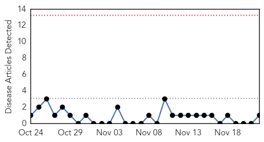
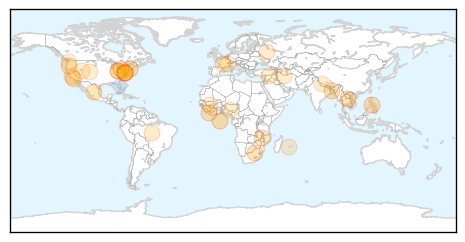
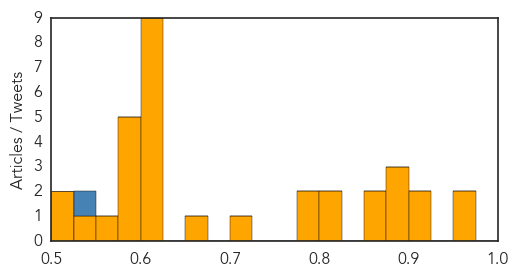

MERS
30-Day Web Trend
0 alerts, 0 warnings

30-Day Twitter Trend
Article Locations
Article Confidences

Top Articles:
Top Tweets:
-
No tweets found for Nov 22, 2015
Unknown
30-Day Web Trend
30-Day Twitter Trend
0 alerts, 0 warnings

Article Locations

Article Confidences
Top Articles:
- 0.974
- Physician gives tips on being flu-season ready
- 0.966
- Proof that the vaccine industry never wants a cure for the flu to be made public
- 0.923
- Key Dates in E. Coli Outbreak Linked to Chipotle
- 0.921
- Pfizer advocates awareness on prevention of pneumonia
- 0.899
- Feature: Laos' commitment to polio response after fatal case attracts international kudos
- 0.890
- People fell ill with E. coli food poisoning after eating at Chipotle Mexican Grill restaurants in six US states
- 0.880
- The Neighbourhood Newspaper
- 0.859
- Erie health expert offers tips to stay healthy for the holidays
- 0.853
- Facts about HIV in the United States
- 0.820
- Chipotle E. Coli Outbreak Spreads
- 0.817
- Coli at Amherst Chipotle Linked to Cases in Different States
- 0.794
- Chipotle E. coli outbreak now linked to illness in 6 states
- 0.793
- Malawi Government fails to pay water bills at Zomba Central Hospital
- 0.708
- Wellmont, Mountain States partner with other health organizations on dangers of antibiotic overuse
- 0.654
- Countries spending the most on health care
- 0.603
- Turkish Airlines flight diverted to Canada after bomb threat
- 0.603
- Obama: COP21 will show world 'not afraid' of extremists
- 0.603
- ‘No quick victory over IS group’ French army chief warns
- 0.603
- Mali hunts hotel attack suspects as president vows ‘terrorism will not win’
- 0.603
- Iran sentences US reporter to jail after ‘closed door’ trial
- 0.603
- President Hollande’s popularity surges in wake of Paris attacks
- 0.603
- Bangladesh reporter shot at funeral of executed opposition leader
- 0.603
- French Muslims plead: "Do not remain deaf, dumb and blind" to terrorism
- 0.603
- 45m Nigerians at risk of bilharzias – FMH
- 0.591
- Chipotle To Reopen Northwest Restaurants This Week
- 0.590
- Coli outbreak linked to Chipotle reaches California
- 0.586
- Special health service in operation
- 0.579
- Greeley police probe sepsis tattoo death, but have not launched criminal investigation
- 0.577
- Uber Capitalizing on Vaccine Market by Delivering Flu Shots
- 0.556
- Chipotle Says It Won't Close More Restaurants as E. Coli Outbreak Reports Spread to Four More States
- 0.542
- Ohio Department of Health accredited in national program
- 0.514
- Study Identifies Patients' Priorities in Treating Rare Muscular Dystrophy
- 0.513
- Coli Outbreak Expanded To 6 States Including NY, California
Top Tweets:
- 0.546
- RT: In red are MERS CoV positive creatures so far: Lots of individual dromedary camels. >1630 humans 1 bat testmore https://t…